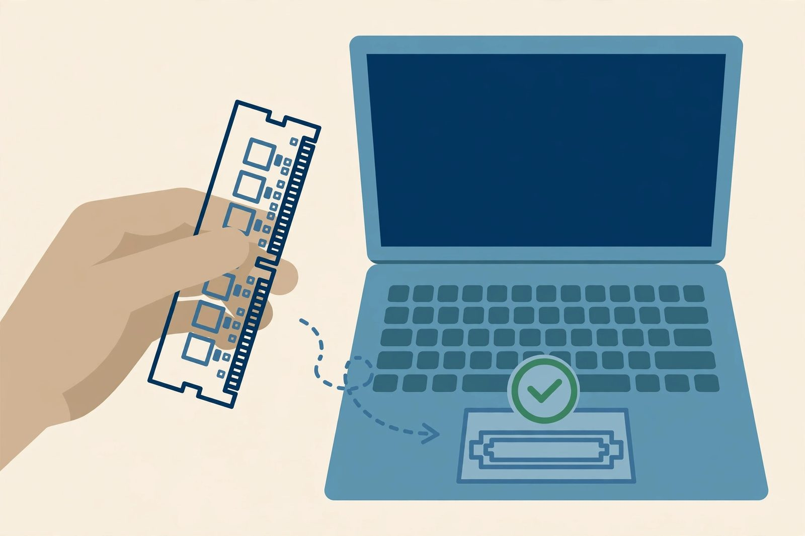

RAM upgrades: check compatibility before you buy

RAM — memory — is your laptop's short-term workspace. When it runs out, the operating system starts shoving data onto the drive instead, and the whole machine slows to a crawl. Many old laptops shipped with just enough memory for the software of their day, which isn't enough for the software of today. Adding RAM is one of the cheapest and most effective upgrades you can make — but only if you buy the right kind. Laptop memory is not one interchangeable thing, so this guide is about getting the purchase right.
How much RAM do you actually have?
Start by looking at what you're running now. On Windows, open Task Manager, switch to the Performance tab, and select Memory — it shows total installed RAM and how much is in use. On macOS, check About This Mac. On Linux, the System Monitor or a quick look at your system info shows the same.
What to look for: if your machine has 4GB or less and regularly sits at high memory usage with just a browser open, a memory upgrade will be noticeable. If usage is low but the machine is still slow, the bottleneck is probably the drive, not the RAM — read the SSD guide first.
What your laptop can take
This is the part people skip, and it's the part that matters. Laptop memory comes in generations — DDR3, DDR4, and newer types — and they are not interchangeable. The slots in your laptop physically accept only the generation it was designed for. Get this wrong and the module simply won't fit.
How to find your answer:
- The manufacturer's spec sheet. Look up your exact model on the manufacturer's support site. It lists the memory type, the number of slots, and the maximum supported total.
- The service manual. The same site usually hosts a maintenance or service manual that shows how to reach the memory slots — and whether the RAM is socketed at all. Some thin laptops have memory soldered to the board. If yours does, there is no upgrade to buy, and it's better to learn that before ordering.
- Memory vendor compatibility tools. Several memory makers offer a lookup where you enter your laptop model and get guaranteed compatible modules. This is the safest way to shop if you don't want to decode part numbers yourself.
- What "maximum" really means. The manufacturer lists a maximum, and sometimes the machine can actually accept more — but don't bet your money on forum anecdotes. Buy to the official maximum or less.
Matching modules, and whether it matters
If your laptop has two memory slots, the ideal setup is a matched pair: two modules of the same size, speed, and type. Matched pairs let the memory controller run in dual-channel mode, which gives a modest speed boost. Mixed sizes usually still work, but the machine may drop out of dual-channel mode, and mismatched modules occasionally cause instability. If you're replacing both slots anyway, buy a kit of two identical modules — it's the cleanest option.
Speed ratings (the numbers like 1600 or 3200) matter less than the type. If you install a faster module than the laptop supports, it simply runs at the laptop's speed. What it must match is the generation and the physical form factor (SO-DIMM for laptops — not the longer DIMMs that desktop machines use).
The installation
On most laptops that allow upgrades, the RAM lives under a small panel on the bottom, or under the keyboard or full bottom cover on models where you remove more of the chassis. The service manual shows the exact path. General steps:
- Shut down fully, unplug the power, and remove the battery if it's removable.
- Ground yourself — touch bare metal or wear an anti-static strap. Memory modules are sensitive to static.
- Open the access panel and locate the slots. Push the retaining clips on each side of the existing module outward; the module pops up at an angle. Slide it out.
- Insert the new module at the same angle, press it down until the clips snap into place on both sides.
- Reassemble and boot. The first boot after a memory change can take a little longer; that's normal. Then check that the full amount shows up in your system info.
Handle modules by their edges — never touch the gold contacts or the chips. And as with everything inside a laptop: never force it. A memory module slides in with light pressure; if it resists, the notch isn't aligned with the key in the slot.
What to do with the old modules
Don't throw working memory away. If you have two slots and replaced a single smaller module, you may be able to keep it in the second slot for a bit more total memory — as long as the combination is stable. Otherwise, old SO-DIMMs are genuinely useful to somebody with the same generation of laptop: sell them, donate them, or keep one as a spare for troubleshooting. If a module ever fails in another machine, having a known-good spare makes diagnosis trivial.
When RAM isn't the answer
A memory upgrade helps machines that run out of workspace. It doesn't speed up a slow hard drive, fix a dying battery, or make an ancient processor handle modern workloads gracefully. The best revival results come from pairing a RAM bump with an SSD: the drive stops being the bottleneck and the extra memory keeps the system off the drive in the first place. Do the SSD first if you can only do one — but if your machine is constantly at full memory usage, the RAM upgrade is the one to do next.